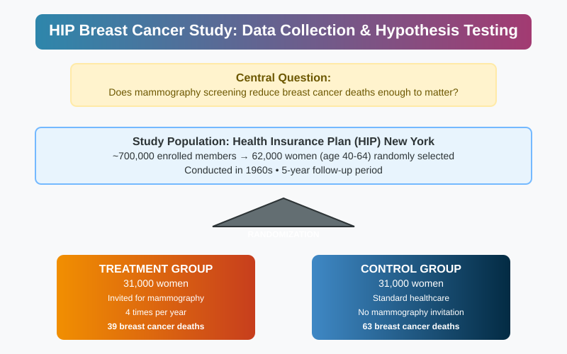
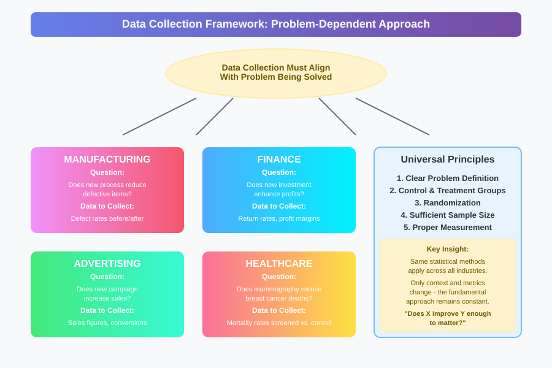
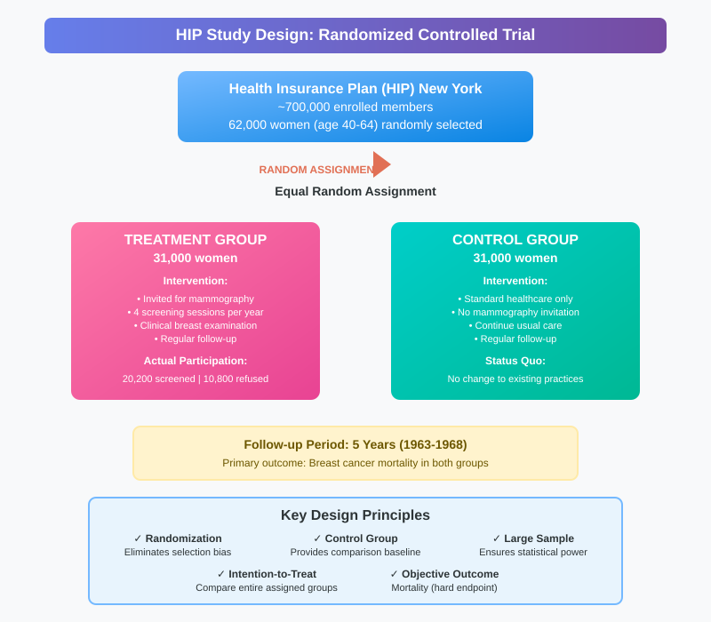
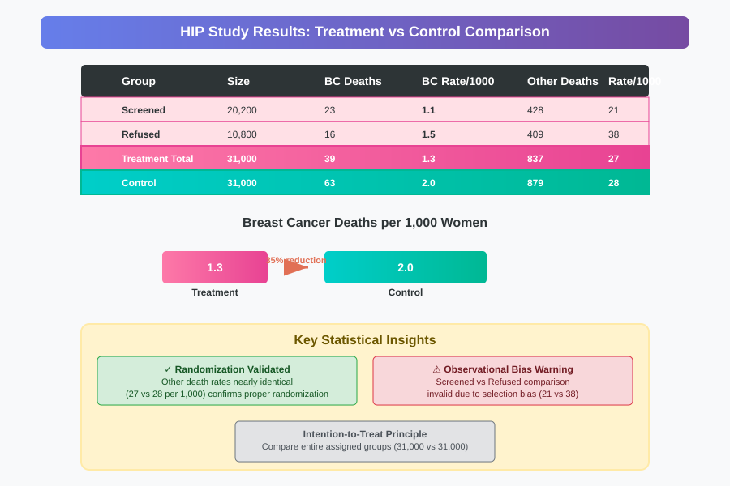
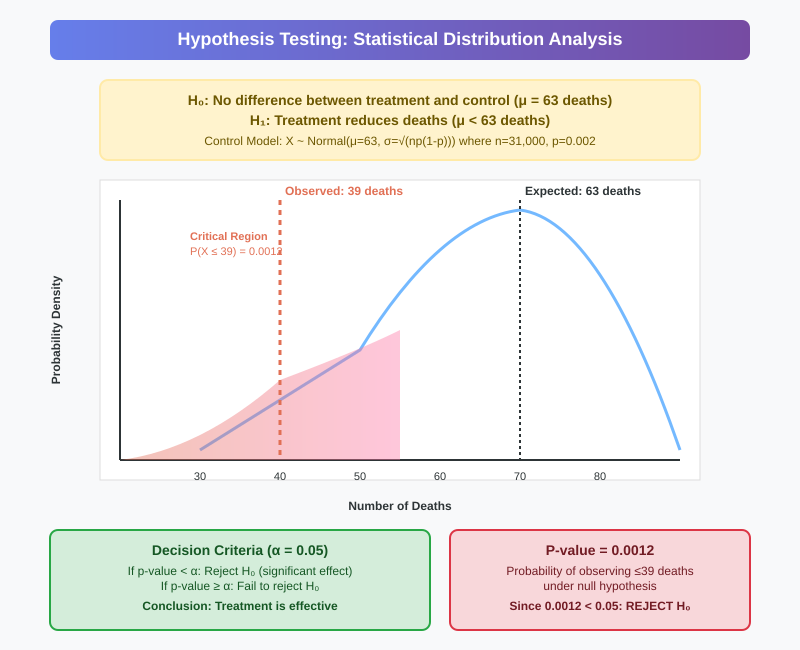
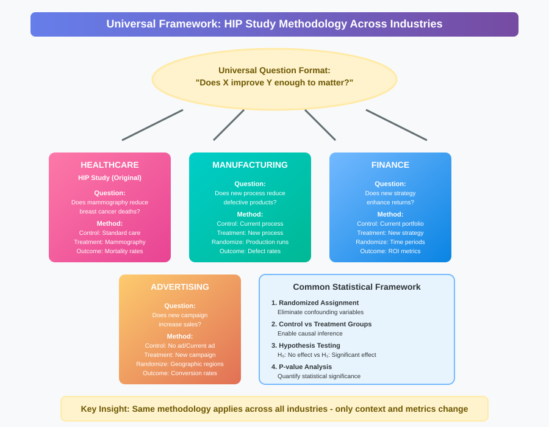

Data Collection and Hypothesis Testing: The HIP Breast Cancer Case Study
📋 Quick Navigation
- Introduction
- Data Collection Principles
- The HIP Study Design
- Randomized Controlled Trials
- Study Results and Analysis
- Hypothesis Testing Framework
- Statistical Significance
- Industry Applications
- Key Takeaways
- References & Further Reading
🎯 Introduction
The Health Insurance Plan (HIP) breast cancer study represents one of the first large-scale randomized controlled trials in mammography screening. This landmark study demonstrates fundamental principles of data collection and hypothesis testing that apply across industries - from healthcare to manufacturing, finance, and advertising.
The central question addressed: Does introducing mammography screening reduce breast cancer deaths enough to matter?

This case study illustrates how proper experimental design and statistical analysis can provide definitive answers to critical questions that save lives and inform policy decisions.
📊 Data Collection Principles
Problem-Dependent Data Collection
The type of data collected must align with the specific problem being solved:
Manufacturing Industry: - Question: Does a new process reduce defective items? - Data: Defect rates before and after implementation
Finance Industry: - Question: Does a new investment enhance profits? - Data: Return rates and profit margins
Advertising Industry: - Question: Does a new campaign increase sales? - Data: Sales figures and conversion rates
Healthcare Industry: - Question: Does mammography reduce breast cancer deaths? - Data: Mortality rates in screened vs. unscreened populations
Universal Principles
Regardless of industry, effective data collection requires:
- Clear problem definition
- Appropriate control and treatment groups
- Randomization to minimize confounding
- Sufficient sample sizes
- Proper measurement protocols

🏥 The HIP Study Design
Study Background
Breast cancer context: - One of the most common malignancies among women in the United States - Mammography: Screening women for breast cancer using X-rays - Key question: Does early detection through mammography reduce mortality?
Study Parameters
Population: - Health Insurance Plan (HIP) in New York - ~700,000 enrolled members - 62,000 women aged 40-64 selected at random
Randomization: - 31,000 women assigned to treatment group - 31,000 women assigned to control group - Random assignment critical for unbiased comparison
Treatment Protocol: - Treatment group: Invited for mammogram four times per year - Control group: Continued standard healthcare (status quo)

Important Distinctions
Invitation vs. Participation: - Not all invited women participated in screening - 20,200 women actually received screening - 10,800 women were invited but refused screening - This creates three subgroups for analysis
🎲 Randomized Controlled Trials
Why Randomization Matters
Randomization ensures that the only systematic difference between groups is the treatment being tested. Without randomization, confounding variables can bias results.
Example of Confounding: In manufacturing, if new processes are always tested on Mondays and old processes on Tuesdays: - Different work crews might be responsible - Crew differences (skill, experience) could influence outcomes - Results might reflect crew differences, not process effectiveness
Avoiding Observational Bias
Problem with non-randomized comparisons: Comparing screened vs. refused participants shows significant baseline differences:
- Death rate from other causes:
- Screened group: 21 per 1,000 women
- Refused group: 38 per 1,000 women
This near-doubling of non-cancer death rates indicates the groups differ systematically in health behaviors, education, and other factors affecting outcomes.
Intention-to-Treat Analysis
Correct comparison: Entire treatment group vs. entire control group - Treatment group (all invited): 1.3 deaths per 1,000 women - Control group: 2.0 deaths per 1,000 women
This comparison maintains randomization integrity and answers the policy-relevant question: "What happens when we offer mammography screening?"
📈 Study Results and Analysis
HIP Study Results Summary
| Group | Size | Breast Cancer Deaths | Rate per 1,000 | All Other Deaths | Rate per 1,000 |
|---|---|---|---|---|---|
| Treatment Group | |||||
| Screened | 20,200 | 23 | 1.1 | 428 | 21 |
| Refused | 10,800 | 16 | 1.5 | 409 | 38 |
| Total Treatment | 31,000 | 39 | 1.3 | 837 | 27 |
| Control | 31,000 | 63 | 2.0 | 879 | 28 |
Key Observations
Primary Finding: - Treatment group: 39 deaths (1.3 per 1,000) - Control group: 63 deaths (2.0 per 1,000) - 35% reduction in breast cancer mortality
Validation of Randomization: - All other deaths nearly identical (27 vs 28 per 1,000) - Confirms groups were properly randomized - Eliminates alternative explanations for mortality difference

🔬 Hypothesis Testing Framework
The Statistical Question
Primary hypothesis: Does mammography screening significantly reduce breast cancer deaths, or could the observed difference be due to chance?
Null hypothesis (H₀): No difference between treatment and control groups
Alternative hypothesis (H₁): Mammography reduces breast cancer deaths
Statistical Model
Control Group Model: - Probability of breast cancer death: p = 0.002 - Sample size: n = 31,000 - Expected deaths: np = 63
Under the null hypothesis, both groups should follow the same binomial distribution:
X ~ Binomial(n=31,000, p=0.002)
For large n, this approximates a normal distribution:
X ~ Normal(μ=63, σ²=np(1-p))
P-Value Calculation
Observed result: 39 deaths in treatment group
Question: What's the probability of observing ≤39 deaths if the true rate equals the control rate?
P-value = P(X ≤ 39 | μ = 63) = 0.0012

📊 Statistical Significance
Interpreting the P-Value
P-value = 0.0012 (0.12%)
This extremely small probability indicates: - Less than 1 in 800 chance of observing such a large difference by random variation alone - Strong evidence against the null hypothesis - Treatment effect is statistically significant
Decision Framework
Significance threshold: α = 0.05 (5%)
Decision rule: - If p-value < α: Reject null hypothesis (treatment is effective) - If p-value ≥ α: Fail to reject null hypothesis (insufficient evidence)
Conclusion: Since 0.0012 < 0.05, we reject the null hypothesis and conclude mammography significantly reduces breast cancer mortality.
One-Tailed vs. Two-Tailed Tests
Direction matters: - Left-tailed (reducing harm): Deaths, defects, costs - Right-tailed (increasing benefit): Sales, profits, satisfaction - Two-tailed (any difference): Quality comparisons, A/B tests
🏭 Industry Applications
Universal Framework
The HIP study methodology applies across industries:

Manufacturing Example
Question: Does a new production process reduce defective items?
Study design: - Control: Continue current process - Treatment: Implement new process - Randomization: Assign production runs randomly - Metric: Defect rate per batch
Hypothesis test: - H₀: No difference in defect rates - H₁: New process reduces defects - Significance level: α = 0.05
Finance Example
Question: Does a new investment strategy enhance returns?
Study design: - Control: Current portfolio allocation - Treatment: New investment strategy - Randomization: Assign time periods or client segments randomly - Metric: Return on investment
Advertising Example
Question: Does a new campaign increase sales?
Study design: - Control: No advertisement or current campaign - Treatment: New advertising campaign - Randomization: Assign geographic regions or customer segments randomly - Metric: Sales conversion rate
Key consideration: Compare all exposed customers vs. control group, not just those who clicked/engaged (intention-to-treat principle).
💡 Key Takeaways
Essential Principles
-
Problem-focused design: Data collection must align with the specific question being answered
-
Randomization is critical: Eliminates confounding variables and ensures unbiased comparisons
-
Intention-to-treat analysis: Compare entire assigned groups, not just compliant participants
-
Statistical rigor: Use formal hypothesis testing to distinguish real effects from random variation
-
Industry universality: The same principles apply whether saving lives or improving business outcomes
Common Pitfalls to Avoid
❌ Comparing non-randomized groups (screened vs. refused participants)
❌ Cherry-picking favorable comparisons without statistical validation
❌ Ignoring confounding variables in observational studies
❌ Conflating correlation with causation without proper controls
✅ Use randomized controlled trials when feasible
✅ Apply intention-to-treat analysis for policy-relevant conclusions
✅ Validate randomization by checking balance on other variables
✅ Use appropriate statistical tests with proper significance thresholds
Decision Framework
When implementing new processes, treatments, or strategies:
- Define clear success metrics aligned with business objectives
- Design randomized experiments to test effectiveness
- Collect sufficient data for adequate statistical power
- Apply rigorous statistical analysis to determine significance
- Make data-driven decisions based on evidence, not intuition
📚 References & Further Reading
Primary Sources
-
Freedman, D.A. (2009). Statistical Models: Theory and Practice. Cambridge University Press.
-
Shapiro, S. (1977). Evidence on screening for breast cancer from a randomized trial. Cancer, 39(6), 2772-2782.
-
Health Insurance Plan Study Group (1971). Breast cancer screening: the HIP randomized controlled trial. Cancer, 28(6), 1546-1552.
Statistical Methodology
-
Fisher, R.A. (1935). The Design of Experiments. Oliver and Boyd.
-
Neyman, J. & Pearson, E.S. (1933). On the problem of the most efficient tests of statistical hypotheses. Philosophical Transactions of the Royal Society A, 231, 289-337.
-
Clinical Trials Methodology - NIH Guidelines
Modern Applications
-
Kohavi, R. & Longbotham, R. (2017). Online controlled experiments and A/B testing. Encyclopedia of Machine Learning and Data Mining, 922-929.
-
Montgomery, D.C. (2017). Design and Analysis of Experiments (9th ed.). Wiley.
Colab Integration

Interactive notebooks available for: - Statistical power calculations - Hypothesis testing simulations - A/B testing frameworks - Randomization procedures
This documentation provides a comprehensive overview of the HIP breast cancer study and its applications to modern data collection and hypothesis testing across industries. For additional questions or clarifications, please refer to the cited sources or consult with statistical professionals.